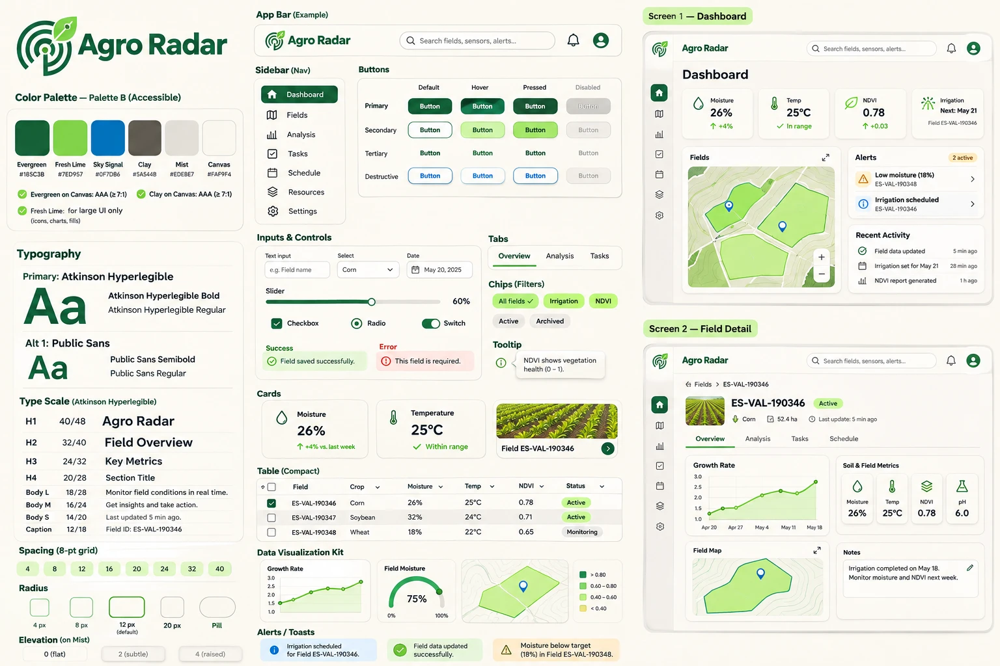

<!doctype html>
<html lang="en">
<head>
<meta charset="utf-8">
<title>AgroRadar — my first hackathon (reel)</title>
<!-- Each beat of the 30-second "how it evolved" reel is one 1080x1920 view: journey.html#j1 … #j11.
     build_journey.py screenshots each and animates them. Times are the real commit times (git log). -->
<link rel="stylesheet" href="https://fonts.googleapis.com/css2?family=Atkinson+Hyperlegible:wght@400;700&display=block">
<style>
  :root { --evergreen:#185C3B; --leaf:#2F7A4F; --lime:#7ED957; --lime-soft:#EEF8E8; --sky:#0F7DB6; --clay:#5A544B; --mist:#EDEBE7; --canvas:#FAF9F4; --ink:#1F2A24; }
  * { box-sizing:border-box; margin:0; }
  html, body { width:1080px; height:1920px; overflow:hidden; font-family:'Atkinson Hyperlegible', sans-serif; color:var(--ink); }
  .j { position:absolute; inset:0; display:none; overflow:hidden; background:var(--canvas); }
  .j.on { display:block; }
  .blob { position:absolute; right:-320px; top:-260px; width:900px; height:820px; background:rgba(126,217,87,.22); border-radius:62% 38% 46% 54% / 60% 44% 56% 40%; }
  .blob.b2 { right:auto; left:-360px; top:auto; bottom:200px; width:760px; height:700px; background:rgba(126,217,87,.14); }
  /* top text: kept above the phone and clear of the right-hand icons Reels adds (~140 px) */
  .top { position:absolute; left:70px; right:150px; top:140px; }
  .time { display:inline-flex; gap:12px; align-items:center; background:var(--evergreen); color:#fff; border-radius:999px; padding:10px 24px; font-size:34px; font-weight:700; }
  .time i { width:14px; height:14px; border-radius:50%; background:var(--lime); display:inline-block; }
  h1 { font-size:76px; line-height:84px; letter-spacing:-1px; color:var(--evergreen); margin-top:26px; }
  h1 em { font-style:normal; color:var(--leaf); }
  .sub { font-size:36px; line-height:48px; color:var(--clay); margin-top:16px; }
  .phone { position:absolute; left:50%; transform:translateX(-50%); top:640px; width:380px; height:780px; border-radius:58px; background:#16211B; padding:14px;
           box-shadow:0 40px 80px -30px rgba(16,40,28,.6); }
  .phone img { width:100%; height:100%; object-fit:cover; object-position:top; border-radius:46px; display:block; }
  .tag { position:absolute; left:50%; transform:translateX(-50%) rotate(-3deg); top:600px; z-index:2; background:var(--lime); color:var(--evergreen);
         font-weight:700; font-size:30px; padding:8px 22px; border-radius:999px; box-shadow:0 8px 20px -8px rgba(24,92,59,.5); white-space:nowrap; }
  /* timeline of the day, above the area Reels covers at the bottom (~350 px) */
  .tl { position:absolute; left:70px; right:70px; top:1480px; height:70px; }
  .tl .track { position:absolute; left:0; right:0; top:22px; height:8px; border-radius:4px; background:var(--mist); }
  .tl .fill { position:absolute; left:0; top:22px; height:8px; border-radius:4px; background:linear-gradient(90deg, var(--lime), var(--evergreen)); }
  .tl .d { position:absolute; top:14px; width:24px; height:24px; margin-left:-12px; border-radius:50%; background:#fff; border:4px solid var(--mist); }
  .tl .d.done { border-color:var(--leaf); background:var(--lime); }
  .tl .d.now { border-color:var(--evergreen); background:var(--evergreen); box-shadow:0 0 0 8px rgba(126,217,87,.45); }
  .tl .lab { position:absolute; top:46px; font-size:22px; color:var(--clay); transform:translateX(-50%); white-space:nowrap; }
  .tl .lab.first { transform:none; } .tl .lab.last { transform:translateX(-100%); }

  /* dark beats */
  .dark { background:radial-gradient(circle at 50% 40%, #23704A 0%, var(--evergreen) 45%, #0F3D27 100%); color:#fff; }
  .dark h1 { color:#fff; } .dark h1 em { color:var(--lime); } .dark .sub { color:#D8E8DD; }
  .dark .tl .track { background:rgba(255,255,255,.2); }
  .rings { position:absolute; left:50%; top:760px; transform:translateX(-50%); }
  .big { font-size:120px; line-height:124px; }
  .stat { position:absolute; left:70px; right:150px; top:1180px; display:flex; gap:20px; }
  .stat div { flex:1; background:rgba(255,255,255,.1); border:2px solid rgba(255,255,255,.25); border-radius:28px; padding:22px; }
  .stat b { display:block; font-size:72px; line-height:76px; color:var(--lime); } .stat span { font-size:28px; color:#D8E8DD; }
  /* drought */
  .dry { background:linear-gradient(180deg, #FCEFD2 0%, #F2CF8E 45%, #DDA35A 66%, #9C7444 66%); }
  .dry h1 { color:#5C3B12; } .dry h1 em { color:#8A5A00; } .dry .sub { color:#6B4A20; }
  .dry .sun { position:absolute; left:50%; top:760px; margin-left:-170px; width:340px; height:340px; border-radius:50%; background:#F7C548;
              box-shadow:0 0 0 46px rgba(247,197,72,.25), 0 0 0 110px rgba(247,197,72,.12); }
  .dry .tl .track { background:rgba(255,255,255,.4); }
  .dry .tl .lab { color:#F6E9D2; }
  /* design system card */
  .ds { position:absolute; left:70px; right:70px; top:640px; height:760px; border-radius:36px; background:#fff; padding:18px; box-shadow:0 30px 60px -30px rgba(24,92,59,.5); }
  .ds img { width:100%; height:100%; object-fit:cover; object-position:left top; border-radius:24px; }
  /* live */
  .url { position:absolute; left:70px; right:150px; top:520px; font-size:58px; font-weight:700; color:var(--evergreen); }
  .fixes { position:absolute; left:70px; right:70px; top:640px; display:grid; gap:16px; }
  .fix { display:flex; gap:20px; align-items:center; background:#fff; border-radius:28px; padding:22px 26px; box-shadow:0 18px 40px -18px rgba(24,92,59,.35); font-size:36px; font-weight:700; }
  .fix .ok { width:56px; height:56px; border-radius:50%; flex:none; display:grid; place-items:center; color:#fff; font-size:32px;
             background:linear-gradient(135deg, var(--lime), var(--leaf) 60%, var(--evergreen)); }
  .fix span { display:block; font-size:26px; font-weight:400; color:var(--clay); }
  .shot { position:absolute; left:70px; right:70px; top:700px; border-radius:30px; overflow:hidden; box-shadow:0 30px 60px -30px rgba(24,92,59,.6); border:10px solid #16211B; }
  .shot img { display:block; width:100%; }
  .checks { position:absolute; left:70px; right:150px; top:1080px; display:grid; gap:14px; font-size:34px; font-weight:700; color:var(--evergreen); }
  .checks div::before { content:'✓  '; color:var(--leaf); }
  #j10 .shot { top:620px; } #j10 .checks { top:1230px; }
  .dark .tl .lab { color:#D8E8DD; }
  /* end card */
  .end { text-align:center; }
  .end .in { position:absolute; left:60px; right:60px; top:230px; display:flex; flex-direction:column; align-items:center; }
  .end .logo { height:110px; }
  .end h1 { font-size:80px; line-height:88px; margin-top:40px; }
  .end .team { font-size:92px; line-height:100px; color:var(--evergreen); font-weight:700; margin-top:36px; }
  .end .by { font-size:36px; color:var(--clay); margin-top:28px; }
  .end .members { display:flex; flex-wrap:wrap; justify-content:center; gap:12px; max-width:920px; margin-top:34px; }
  .end .members span { background:#fff; border-radius:999px; padding:12px 24px; font-size:32px; font-weight:700; box-shadow:0 10px 24px -14px rgba(24,92,59,.45); }
  .end .url2 { margin-top:36px; font-size:40px; color:var(--evergreen); font-weight:700; }
  .end .hash { margin-top:12px; font-size:32px; color:var(--leaf); font-weight:700; }
</style>
</head>
<body>
<div id="beats"></div>
<script>
// Real milestones of the day (git commit times, 15 Nov 2026). Positions on the timeline: 12:54 -> 23:51.
const MS = [['12:54', 'Prototype'], ['13:45', 'NASA layers'], ['14:34', 'AgroRadar'], ['19:18', 'Design'], ['20:49', 'Redesign'], ['21:06', 'Live'], ['22:25', 'Fixes'], ['23:51', 'Submitted']];
const mins = t => { const [h, m] = t.split(':').map(Number); return h * 60 + m; };
const pos = t => (mins(t) - mins('12:54')) / (mins('23:51') - mins('12:54')) * 100;
const tl = now => `<div class="tl"><div class="track"></div><div class="fill" style="width:${now ? pos(now) : 0}%"></div>
  ${MS.map(([t], i) => `<div class="d ${now && mins(t) < mins(now) ? 'done' : ''} ${t === now ? 'now' : ''}" style="left:${pos(t)}%"></div>`).join('')}
  <div class="lab first" style="left:0">12:54</div><div class="lab last" style="left:100%">23:51</div></div>`;
const head = (time, h, sub) => `<div class="top">${time ? `<span class="time"><i></i>${time}</span>` : ''}<h1>${h}</h1>${sub ? `<p class="sub">${sub}</p>` : ''}</div>`;
const phone = (src, tag) => `${tag ? `<div class="tag">${tag}</div>` : ''}<div class="phone"></div>`;
const RINGS = `<svg class="rings" width="380" height="380" viewBox="0 0 560 560" fill="none" stroke="#7ED957" stroke-linecap="round">
  <circle cx="280" cy="280" r="26" fill="#7ED957" stroke="none"/><path d="M200 200a113 113 0 0 0 0 160" stroke-width="18"/><path d="M360 360a113 113 0 0 0 0 -160" stroke-width="18"/>
  <path d="M140 140a198 198 0 0 0 0 280" stroke-width="16" opacity=".6"/><path d="M420 420a198 198 0 0 0 0 -280" stroke-width="16" opacity=".6"/>
  <path d="M80 80a283 283 0 0 0 0 400" stroke-width="14" opacity=".35"/><path d="M480 480a283 283 0 0 0 0 -400" stroke-width="14" opacity=".35"/></svg>`;

const BEATS = {
  j1: ['dark', `${head('', '<span class="big">My first <em>hackathon.</em></span>', 'NASA Space Apps Challenge 2026')}${RINGS}
       <div class="stat"><div><b>11 h</b><span>idea to live app</span></div><div><b>8</b><span>milestones</span></div><div><b>1</b><span>real problem</span></div></div>${tl('')}`],
  j2: ['dry', `${head('', 'It started with <em>a drought.</em>', 'This year the canícula — a long dry spell in the rainy season — cost our farmers their crops.')}<div class="sun"></div>${tl('')}`],
  j3: ['', `<div class="blob"></div>${head('12:54', 'First prototype', 'A map, a form and 35 years of NASA climate data.')}${phone('screens/v1_first.jpg', 'v1')}${tl('12:54')}`],
  j4: ['', `<div class="blob"></div>${head('13:45', 'NASA satellites <em>join in</em>', 'Spanish and English, plus NASA GIBS satellite layers.')}${phone('screens/v2_nasa_layers.jpg', 'v2')}${tl('13:45')}`],
  j5: ['', `<div class="blob"></div>${head('14:34', 'It gets a name: <em>AgroRadar</em>', 'A guided, step-by-step flow anyone can follow.')}${phone('screens/v3_guided.jpg', 'v3')}${tl('14:34')}`],
  j6: ['', `<div class="blob"></div>${head('19:18', 'Our own <em>design system</em>', 'Logo, colours, readable type — and the first NASA satellite data on greenness.')}
       <div class="ds"></div>${tl('19:18')}`],
  j7: ['', `<div class="blob"></div>${head('20:49', 'Redesign, inspired by <em>real apps</em>', 'Success gauge, rotation cards and NASA slope data.')}${phone('../screens/4_result.jpg', 'v5')}${tl('20:49')}`],
  j8: ['dark', `${head('21:06', 'We’re <em>live!</em>', '')}<div class="url" style="color:#7ED957;top:420px">agroradar.space</div>${phone('../screens/1_intro.jpg', 'online')}${tl('21:06')}`],
  j9: ['', `<div class="blob"></div>${head('22:25 → 23:00', 'Test, break, <em>fix.</em>', 'Real phones, real feedback.')}
       <div class="fixes"><div class="fix"><span class="ok">✓</span><div>New NASA days not ready<span>handled on the live site</span></div></div>
       <div class="fix"><span class="ok">✓</span><div>GPS on mobile<span>clear help and a longer wait</span></div></div>
       <div class="fix"><span class="ok">✓</span><div>Coordinates search<span>paste from Google Maps</span></div></div>
       <div class="fix"><span class="ok">✓</span><div>Share the full result<span>one message for WhatsApp</span></div></div>
       <div class="fix"><span class="ok">✓</span><div>Same rain for every town<span>replaced with real season rain</span></div></div></div>${tl('22:25')}`],
  j10: ['', `<div class="blob"></div>${head('23:51', '<em>Submitted.</em>', 'Demo video, data sources and AI disclosure — all in.')}
       <div class="shot"></div>
       <div class="checks"><div>Live app</div><div>Demo video</div><div>Built on NASA open data</div></div>${tl('23:51')}`],
  j11: ['end', `<div class="blob"></div><div class="blob b2"></div><div class="in">
       <h1>From idea to live app in <span style="color:var(--leaf)">11 hours.</span></h1>
       <p class="by">My first hackathon, with</p><p class="team" style="margin-top:8px">Adapting Cuzucos</p>
       <div class="members"><span>Georgina Acevedo</span><span>Christopher Alvarenga</span><span>David Preza</span><span>María Vásquez</span><span>Eduardo Perez</span><span>Vanessa Alvarado</span></div>
       <p class="url2">agroradar.space</p><p class="hash">#NASASpaceApps</p></div>`],
};
document.getElementById('beats').innerHTML = Object.entries(BEATS).map(([id, [cls, html]]) => `<section class="j ${cls}" id="${id}">${html}</section>`).join('');
const show = () => document.querySelectorAll('.j').forEach(s => s.classList.toggle('on', '#' + s.id === (location.hash || '#j1')));
addEventListener('hashchange', show); show();
</script>
</body>
</html>
